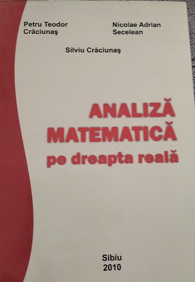
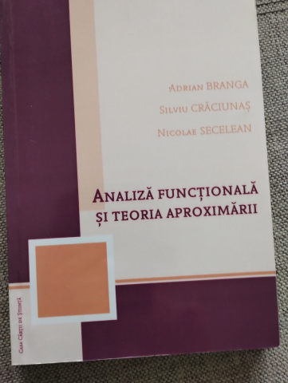
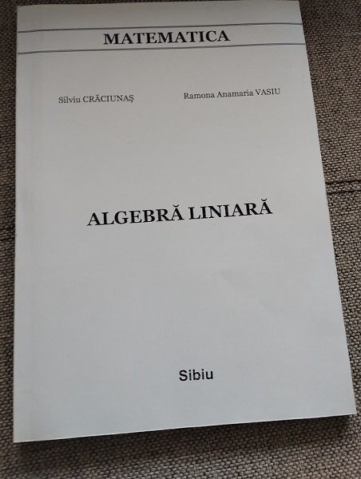
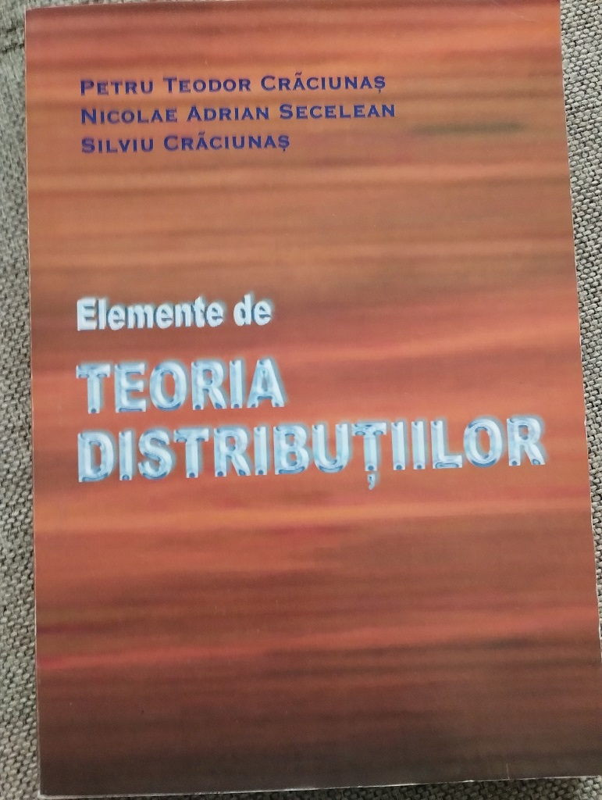
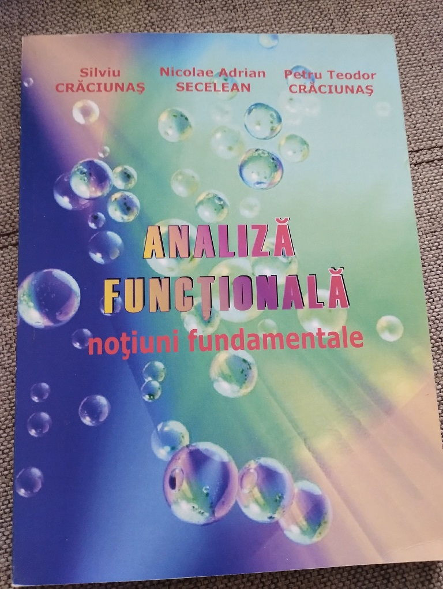
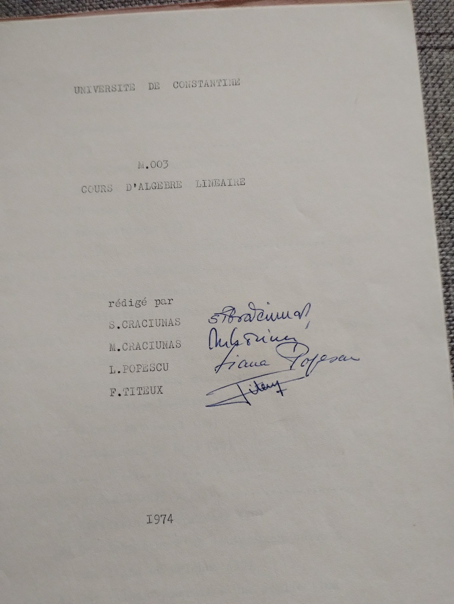
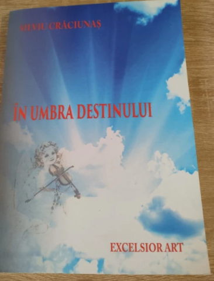

About

b. 24 october 1946, Șiria Village, Arad, Romania
- 2011 Withdrawn from official activities
- 1991-2011 Associate Professor position in the Department of Mathematics and Computer Science at "Lucian Blaga" University of Sibiu
- 1985-1991 Principal Scientist at University of Bucharest
- 1976-1985 Scientist at Metallurgical Research Institute
- 1972-1975 Associate Professor position at University of Constantine, Algerie
- 1969-1972 Assistant position at University of Galati
- 1993 - 1996: Secretar Ştiinţific al Facultăţii de Ştiinţe, Universitatea “Lucian Blaga” Sibiu
Mathematics - Carti
- Crăciunaş T.P., Secelean N.A., Crăciunaş S., Editura Universitatii “Lucian Blaga” din Sibiu, 2010

-
Analiză Funcțională și Teoria Aproximării, Branga A, Craciunas S., Seceleanu N., Editura Casa Cartii de Stiinte, 2009, 303 pg.

-
Algebra Liniara, Crăciunaş S., Vasiu Ramona, Editura “BURG” Sibiu, 2006, 120 pg.

-
Elemente de Teoria Distributiilor, Crăciunaş T.P., Secelean N.A., Crăciunaş S., Editura "Gheorghe Asachi", Iaşi, ISBN 973-8292-99-9, 2002, 240 pg.

-
Analiză Funcțională,Crăciunaş S., Crăciunaş P., Secelean N., Editura Universităţii "Lucian Blaga", Sibiu, ISBN 973-651-103-0, 2000, 158 pg.

-
Topologie generala, Crăciunaş S., Secelean N., Crăciunaş P., Editura Universităţii "Lucian Blaga", Sibiu, ISBN 973-95604-6-6, 1993, 102 pg.
- Mathematical Analysis,Crăciunaş P., Crăciunaş S., , part II, Technical University, Iassy, 1992, 103 pg.
-
Cours d’algebre linéaire,Crăciunaş S., Crăciunaş Maria, Popescu Liana, Titeux F., , Université de Constantine, Algeria, 1974, 37 pg.

Computer Science
- Informatica industriala: Sisteme informatice pentru conducerea si urmarirea productiei intr-un combinat siderurgic
- Pionierat in utilizarea minicalculatoarelor: Asistenta in utilizarea sistemului de operare RSX-11M de catre studentii Universitatii din Bucuresti si crearea de suport pentru practica studentilor
- Pionierat in utilizarea calculatoarelor personale: Asistenta in utilizarea sistemului de operare MS-DOS de catre studentii Universitatii din Bucuresti si crearea de suport pentru practica studentilor
- Pionierat în e-Learning prin sistemul MySeLF (My System foe e-Learning and Formation): Contribuție majoră la proiectarea și dezvoltarea timpurie a infrastructurii digitale pentru Învățământul la Distanță (IDD) în cadrul Universității „Lucian Blaga” din Sibiu.
- Videoconferinte: Realizarea primei aplicatii de videoconferinte din sistemul de invatamant la distanta. Aplicatia a primit premiul de excelenta la Conferinta de Invatamant Virtual CNIV, Bucuresti 2004
- Televiziune online: Realizarea unui post TV online in cadrul Departamentului de Invatamant la Distanta a Universitatii “Lucian Blaga” din Sibiu
- Arhitectură de Platformă: Implementarea unor modele logico-matematice riguroase pentru managementul conținutului educațional, evaluarea studenților și asimilarea resurselor multimedia în procesul de e-Education.
- Integrare Tehnologică: Adaptarea cursurilor universitare clasice în structuri de date flexibile și interactive, punând bazele tranziției către platformele moderne de management al învățării (LMS).
- Premii: 2004 - Premiul special "Centrul Virtual de Excelenţă SIVECO" – Conferința Națională de Învățămînt Virtual, Universitatea din București
Proiecte: Membru in proiect POSDRU 61878/2010 "Excelență academică în învățământul la distanță și învățământul cu frecvență redusă – Un demers pentru calitate" - Proiecte: Membru in proiectul SCOLII POSTDOCTORALE PENTRU BIODIVERSITATE SI BIOTEHNOLOGII ALIMENTARE PE BAZA ECOECONOMIEI SI BIOECONOMIEI NECESARE ECOSANOGENEZEI
- Specializari: Certificat privind perfecționarea în tehnologia învățământului la distanță, Centre Universite - Economie d'Education Permanente, Université des Sciences et Tehnologies de Lille
Literature
-
2018-2024 Editor of W-Poesis magazine
W-Poesis is an independent, international, free-access literary journal. W-Poesis is an online magazine but it offers all the necessary elements to be printed. For printing, it is not necessary to obtain approvals. It’s like a desert where you can build your literary home. Because the acceptance rate for almost all literary journals is about 5%, we decide to open our house for quality work but without quantitative limitations. We are not interested in porn, racial slurs, excessive gore, or obscenity. We are dedicated to discovering and publishing the finest original poetry. We prefer expressive poems that give us a feeling and affect our soul. We accept submissions year-round. Happy reading and writing!
visit site: w-poesisLiterary work: His literary work has been featured in numerous cultural and international magazines, including Indian Literature Review, Congruence, Everyday Poems, Panel Magazine, and Rapsodia. Crăciunaș's poetry deeply explores the profound emotional states of human beings in connection with nature and life.
- Panel Magazine, November 2018, Issue 2
visit site: Genesis & Rounded- Every Day Poems, 27 February 2016 - Beyond Time
visit site: Beyong Time- Section8Magazine, 2016 March 30, Droplets of Poems
visit site: Droplets of Poems- Lazaret - suflete ratacite, roman, Editura Eikon, 2016 În drumurile noastre, deseori ochii iscodesc dincolo de ziduri cu multă curiozitate. Din fericire nu putem vedea în spatele lor, dar, tot din fericire, imaginația ne oferă suportul de a ști că acolo, dincolo de ziduri, se râde și se plânge așa cum și între propriile noastre ziduri ne bucurăm și ne întristăm. A scrie înseamnă să ajuți oamenii să vadă dincolo de ziduri. Dar există și altfel de ziduri în fața cărora chiar și imaginația se blochează. Este zidul care crește acolo unde rațiunea dispare. Mergând pe valea Oltului, dinspre Sibiu spre Râmnicu Vâlcea, adesea am trecut pe lângă un astfel de zid. O placă îți spune că ai intrat în satul Lazaret, dar nici nu ai timp să te dumirești și o altă placă te anunță că ai părăsit acest sat chiar înainte de a-l desluși. Totuși, dacă privești în stânga drumului, vei observa un zid lung în spatele căruia sunt ascunse câteva case din care zărești doar acoperișurile și un turn mâncat de vreme. În spatele acestor ziduri își duc viața oameni cu suflete rătăcite de timp și lume. Oameni care au propriul zid la purtător. Și ei au devenit un izvor al dorinței mele de a scrie. De a scrie despre lumea lor. Așa s-a născut acest roman.

- Revista Alternanțe, Germania, nr.2 aprilie 2015 - Moartea ca moarte&Galben
- In umbra destinului, roman, Editura Excelsior Art, 2015 Am părăsit logica strictă a spaţiilor abstracte pentru a culege frânturi de viaţă ridicate la nivel de crez sub acoperişul creaţiei literare. În acest spirit, acest roman este doar în parte ficţiune, personajele şi întâmplările fictive constituind piedestalul pe care am aşezat semeni de-ai noştri împreună cu micile lor istorii. Episod cu episod, veţi urca pe acest piedestal şi veţi înţelege că acele fiinţe, acei copii căzuţi victime ale violenţei individuale sau de stat, puteau fi copiii voştri. De acolo, de sus, priviţi pentru ei lumea, iar când veţi coborî în propriul eu lăsaţi-le şi lor un lăcaş cât de mic în viaţa voastră.

Mathematics - Carti
- Crăciunaş T.P., Secelean N.A., Crăciunaş S., Editura Universitatii “Lucian Blaga” din Sibiu, 2010
-
Analiză Funcțională și Teoria Aproximării, Branga A, Craciunas S., Seceleanu N., Editura Casa Cartii de Stiinte, 2009, 303 pg.
-
Algebra Liniara, Crăciunaş S., Vasiu Ramona, Editura “BURG” Sibiu, 2006, 120 pg.
-
Elemente de Teoria Distributiilor, Crăciunaş T.P., Secelean N.A., Crăciunaş S., Editura "Gheorghe Asachi", Iaşi, ISBN 973-8292-99-9, 2002, 240 pg.
-
Analiză Funcțională,Crăciunaş S., Crăciunaş P., Secelean N., Editura Universităţii "Lucian Blaga", Sibiu, ISBN 973-651-103-0, 2000, 158 pg.
-
Topologie generala, Crăciunaş S., Secelean N., Crăciunaş P., Editura Universităţii "Lucian Blaga", Sibiu, ISBN 973-95604-6-6, 1993, 102 pg.
- Mathematical Analysis,Crăciunaş P., Crăciunaş S., , part II, Technical University, Iassy, 1992, 103 pg.
-
Cours d’algebre linéaire,Crăciunaş S., Crăciunaş Maria, Popescu Liana, Titeux F., , Université de Constantine, Algeria, 1974, 37 pg.